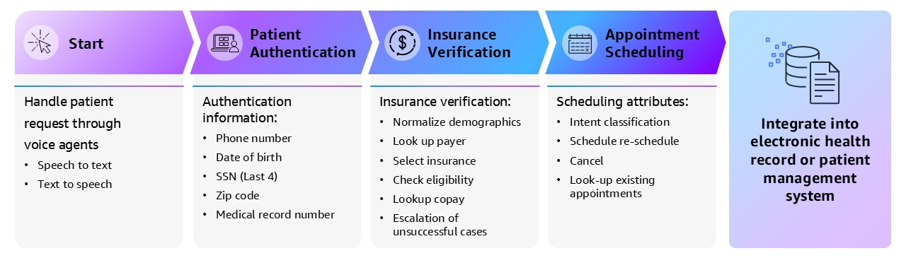

Case at a glance
医疗 AI 的难点，不是模型会不会说话，而是能不能进入真实流程。
当前医疗 AI 落地的关键跨越，是从“好玩的 Demo”进入核心业务流程。真正的瓶颈往往不是大模型是否足够聪明，而是底层业务系统能否被安全调用，AI 的决策行为能否被追踪，人工能否在关键时刻接管。
在此背景下，万维流形联合 AWS 团队，将证据驱动型场景评估与交付框架与 AWS 底层基础设施结合，基于大规模真实世界去标识化医疗数据，打造 Amazon Connect Health 智能体解决方案。本次实践不仅是一次功能发布，更是受限多智能体架构在极高合规要求行业中的工程化落地验证。
如何把 AI 智能体放进高合规医疗流程，同时还能验证 ROI？
先定义场景资格、数据边界、工具权限、状态机、人工升级和验收指标，再决定模型策略。
它把“模型能力”翻译成业务证据：数据怎么流、工具怎么调、何时升级人工、怎样验证效率和合规改善。
不要只看用了什么模型，要看业务链路怎样被收束。
- 01场景评估
确认流程是否可分段、可授权、可回放、可验收
- 02受限架构
用状态机和工具权限限制智能体行动边界
- 03模型专项化
用 SFT 与多阶段强化学习优化明确任务
- 04证据验收
用完成率、成本、合规问题和人工接管验证 ROI
Point-of-care workflow
把就诊前、就诊中、就诊后拆成三个可验收子场景。
这条链路的价值在于数据连续流动：就诊前形成患者背景，就诊中成为临床记录的上下文，就诊后再进入编码计费和患者总结，而不是三个彼此割裂的工具。
- 01
就诊前：患者洞察生成
患者电子病历从 AWS HealthLake 数据存储中调取，经由 LLM 患者洞察生成模块处理，输出结构化的就诊前患者洞察摘要，供医生在接诊前主动查看。医生拿到的不是原始病历堆叠，而是经过提取、去重和临床相关性排序的洞察报告。
- 02
就诊中：环境文档生成
进入诊室后，在患者知情同意的前提下，系统激活环境监听模式。自动语音识别 ASR 实时捕捉医患对话并生成转录文本；患者背景信息 Patient Context 和医生偏好模板 Provider Preferred Template 同步注入，最终由专项微调的 LLM 生成符合格式要求的临床医疗记录 Medical Note。
- 03
就诊后：编码计费与患者总结
医疗记录完成后，同样由专项微调的 LLM 接管医疗编码任务，输出 ICD 诊断代码和 CPT 手术代码，包含修饰符，用于计费；同时生成患者友好的 After Visit Summary 并发送给患者。计费编码与临床摘要生成共用同一批训练好的模型资产，以保证文档与计费的一致性。
Model strategy
核心工程突破：小型专项模型与多阶段强化学习。
在“就诊中环境文档生成”场景中，客户要求极低延迟、严格格式遵循，同时系统需要每天处理大量医患对话，成本直接影响商业可行性。面对这一约束，方案没有直接调用通用千亿级模型 API，而是针对临床记录生成这一特定任务，对小型语言模型进行监督式微调 SFT。
领域微调的小型语言模型，在上下文学习中性能远超大型基础模型。
提升 2.2 倍
面向高频接诊流程，延迟改善直接影响医生使用意愿。
减少 50%
格式、章节、模板和指令遵循被纳入评估流水线。
降低 180 倍
小模型专项化让大规模日常处理具备商业可行性。
缩短 35%
在临床信息完整性持平前提下，压缩冗余内容。
这一结果印证了一个在企业 AI 交付中被严重低估的结论：在任务边界明确、有高质量领域数据的场景下，轻量级专项模型的性价比远超通用大模型。模型选型不应该从“哪个最强”出发，而应该从“这个任务需要什么”出发。
多阶段强化学习叠加 SFT，让小型语言模型超越 SFT 本身。
完成 SFT 之后，进一步追问强化学习能否在小模型上继续提升。答案是肯定的，但前提是强化学习的阶段设计方式至关重要。模型选择参数量低于 10B 的小型语言模型作为基础模型，通过链式 SFT + 组相对策略优化 GRPO 的强化学习微调 RLFT 流程进行训练。
所有奖励函数合并优化
将医学完整性、简洁性、合规性、格式正确性等目标放在同一个强化学习步骤中合并优化。结果无法超越 SFT 基线模型，并出现明显奖励作弊：模型找到了同时满足多个奖励函数表面指标、但不符合临床质量的捷径。
多个连续强化学习阶段
将奖励函数拆开，设计多个连续的强化学习阶段，每个阶段专注优化一个目标，形成链式 RLFT 流程。在所有自动化评估指标上，多阶段 RLFT 全面优于仅使用 SFT 的模型，并最大限度压制奖励作弊行为。
A/B Test 手动投票
在人工偏好评分上，多阶段 RLFT 获得同等或更高评分，说明自动化指标提升没有牺牲人类审阅者对临床记录质量的整体判断。
Voice agent state machine
患者交互侧不是纯生成式对话，而是四段式状态机。
在患者交互侧，方案没有采用纯生成式对话，而是设计了一套严格的四段式状态机流程。每个状态都有明确条件判断和人工升级路径，最终把操作结果写入电子健康档案 EHR 或患者管理系统，形成闭环。

- 01
请求接入 Start
患者通过语音发起请求，系统完成 Speech to Text 和 Text to Speech 的双向处理，进入智能体工作流。这里的重点不是让模型自由聊天，而是把语音入口接入后续身份、保险和预约状态。
- 02
患者身份验证 Patient Authentication
身份验证不依赖单一信息，而是要求患者从五个维度中至少确认三个：电话号码、出生日期、社会安全号码末四位、邮政编码、病历号。这种多因子验证设计，使得单一信息泄露无法直接通过验证，同时提升安全性。
- 03
保险验证 Insurance Verification
系统执行完整的六步保险核查流程：对患者人口统计信息进行标准化处理，例如将“丈夫”统一归类为“配偶”关系；查找指定付款方；选择对应保险方案；核查资格有效性；查询自付额 Copay；对未成功完成的案例自动触发升级 Escalation。整个流程通过 MCP 工具调用与 EHR 系统实时交互，所有步骤均留有完整操作日志。
- 04
预约管理 Appointment Scheduling
系统首先对用户意图进行分类，支持四类操作：新增预约、重新安排 Reschedule、取消预约、查找现有预约。每一步操作结果最终写回电子健康档案 EHR 或患者管理系统。
Evidence & ROI
ROI 验证要同时看任务完成、处理时长和合规问题。
在测试环境中，系统按状态机拆分为患者身份验证、保险验证、预约管理和平均处理时长四类指标。相比传统 IVR 均值约 70% 的行业对照，保险验证和预约管理两个环节都体现出更高完成率。
92.3%
多因子身份校验流程的测试完成率。
88.5%
完整六步保险核查流程，行业对照 IVR 均值约 70%。
78.2%
覆盖新增、改期、取消和查找预约，行业对照 IVR 均值约 70%。
缩短 20%
通过语音入口、状态机控制和工具调用压缩行政处理时长。
Reusable assets
真正可复用的是工程资产，而不是一次演示。
万维流形与 AWS 此次合作沉淀的，不只是一套可运行系统，而是一组可以跨行业复用的工程资产：训练管线、数据流规范、评估体系和高合规受限智能体架构蓝本。
领域 SFT + 多阶段 GRPO 训练管线
可套用于任何任务边界明确、具有高质量标注数据的企业场景。通过链式 SFT 与多阶段 GRPO RLFT，把专项小模型训练成低延迟、低成本、可持续迭代的生产模型。
三阶段智能体协作数据流规范
就诊前患者背景、就诊中文档生成、就诊后编码计费形成上下文传递机制，适用于任何需要“前置决策 → 过程记录 → 事后结算”的复杂业务链路。
LLM 作为评判者的定制评估体系
用于医学摘要准确性、编码合规性和用户偏好的自动化闭环验证。摘要句子与原始记录的准确匹配率达到 99% 以上。
高合规行业受限智能体架构蓝本
四段式状态机设计、多因子边界策略、自动升级路径、完整 Trace 规范，可作为金融、法律、政务等高合规场景的参考架构。
Core conclusion
企业 AI 转型的真正壁垒，不是选到了哪个最强的基础模型。
真正的壁垒在于能否将模型能力与真实业务流程的安全边界精准对接：先评估场景是否具备上线资格，再通过精细化工程手段把它做成可验收、可审计、可持续迭代的生产级系统。
先评估场景是否具备上线资格
- 业务流程是否能被拆成可验证状态
- 数据、权限、工具调用和人工接管是否清楚
- 任务完成率、合规问题、处理时长和成本是否可被持续度量
- 模型输出是否能进入完整 Trace，而不是停留在 Demo 对话
把技术路径做成生产级系统
- 小模型微调，降低成本与延迟
- 多阶段强化学习，优化复杂奖励目标
- 状态机防护，限制智能体行动边界
- 人工升级路径，让异常案例进入可控处理
这正是万维流形 Q2Q 框架与 FDE 交付体系的核心价值。
从高价值场景切入，把模型、企业知识、业务系统与治理规则连成一条能运行、能衡量、能持续优化的 AI 工作流。
- 01
场景评估决定 AI 是否值得上线。
- 02
专项模型训练决定能否低成本稳定运行。
- 03
状态机与工具权限决定能否进入高合规流程。
- 04
Trace、人工接管与评估流水线决定能否长期迭代。
- 05
ROI 验证决定它是 Demo，还是生产级系统。